openGym Operator's Manual
Every screen, every feature, and the handful of things that genuinely trip people up — written against a running instance rather than from the feature list.
What this is
openGym is a workout tracker you run yourself. You plan a week of routines, it walks you through each session set by set, and it keeps every weight, rep and weigh-in in a folder on your own machine. There is no company account, no subscription, and no telemetry.
Two things follow from that, and both shape how you use it:
- Your data lives in
./datanext to the app. Back that folder up and you have backed up everything. - Sign-in is by passkey — your fingerprint, face, or device PIN. There are no passwords and no reset emails, because there is no one to email you.
The app runs in a browser and installs to a home screen like a native app. There is also a standalone Android build; see Section 13.
Every plate in this manual was captured from a real running build, using the app's seeded example history so the charts have something to show. One consequence: a Demo section appears at the top of Settings in Plate 13 that you will not see on your own instance.
Install & first run
You need Docker with the Compose plugin. Nothing else — no Node, no build step.
git clone https://github.com/Skyler000/openGym
cd openGym
cp .env.example .env
docker compose up -d --buildOpen http://localhost:8080 and tap Create profile. The first launch also downloads the exercise images and animations — about 140 MB, once.
Configuration
Everything is set in .env. The two that matter most are RP_ID and ORIGIN, because passkeys are bound to them.
| Setting | What it does | Default |
|---|---|---|
RP_ID | The exact hostname passkeys are bound to | localhost |
ORIGIN | The exact URL the app is served from | http://localhost:8080 |
WEB_PORT | Host port for the web container | 8080 |
ADMIN_UIDS | Comma-separated user ids granted the admin dashboard | empty |
INVITE_ONLY | Require an invite code to create a profile | off |
SESSION_DAYS | How long a sign-in lasts | 90 |
If something else on your machine already holds port 8080, the web container fails to start with "port is already allocated". Change both WEB_PORT and the port inside ORIGIN — they have to agree, or sign-in breaks.
./data holds the key that signs every session cookie. Anyone who obtains it can forge a sign-in for any account on your instance. It is covered by .gitignore — leave it that way, and never publish a copy of it.
Profiles & sign-in
Tap Create profile, enter a name, and confirm with your fingerprint, face or device PIN. That creates a passkey stored by your phone or password manager — iCloud Keychain on Apple devices, Google Password Manager on Android. Signing in later is the same gesture. Each profile keeps its own plan, workouts and body-weight log.
Guest mode
Continue without account skips sign-in entirely. Everything works, but the data is stored only in that one browser: no sync to other devices, no server copy, and clearing site data erases it. It is the right choice for trying the app out, and the only choice where passkeys are unavailable.
This almost always means the page is not on a secure origin, not that your browser is too old. Browsers only expose the passkey API over HTTPS, with a single exception for http://localhost on the machine itself.
So reaching the app from your phone at http://192.168.1.x:8080 will always show this message. Two rules have to hold together: the page must be served over HTTPS, and RP_ID must equal the hostname in the address bar. An IP address can never satisfy the second — passkeys require a real domain name, so a certificate on a LAN IP does not help. Until you have an HTTPS hostname, phone users are limited to guest mode.
Signing out
Sign out clears this device. Sign out everywhere invalidates every session ever issued for the account, on every device — use it if a phone goes missing. Your passkey still works, so you can sign straight back in.
The Home screen
Home answers one question: what am I doing today? The week strip runs across the top with today circled; a dot under a day means a workout is planned or was logged. Arrows step to other weeks.
Below it, Today names the routine scheduled for this weekday with a Start button. Tapping any other day lets you reschedule — move a session without disturbing your weekly plan, which is what you want when you are ill or the gym is shut.
Then the body-weight card: your latest weigh-in, the change since last time, and a chart with your goal drawn as a dashed line. Losses and gains are coloured by whether they move toward your goal, not by direction — so gaining toward a target reads green. Log adds a weigh-in. Finally the streak card counts consecutive weeks trained.

Building your plan
The Plan tab has two halves. Week schedule assigns a routine to each weekday, or marks it Rest. Routines lists the routines themselves — a routine is a named set of exercises, and the same one can sit on several days.
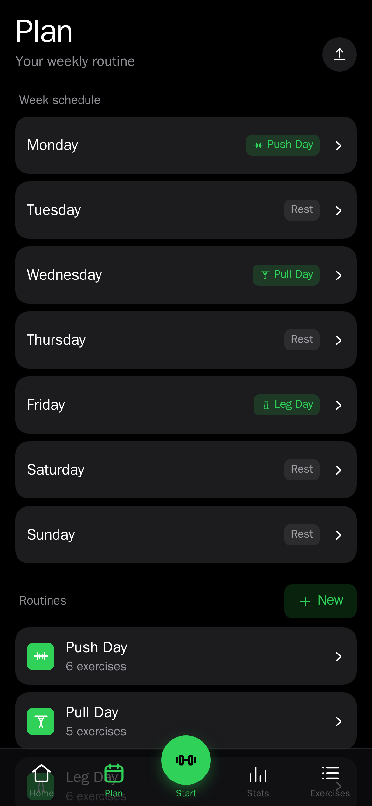
Editing a routine
Open a routine to add exercises, set how many sets each carries, reorder them, and build supersets. This is also where you choose the progression rule that decides your target weights.
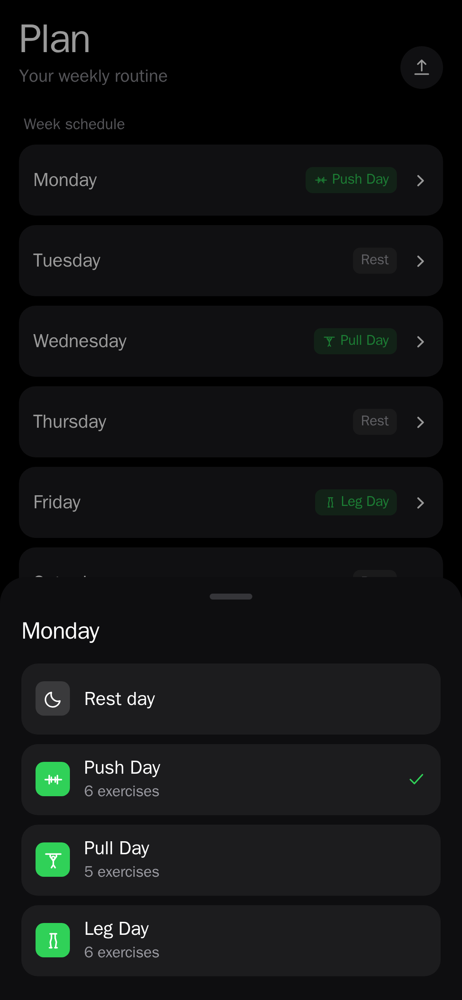
Progression rules
Pick one per routine and override it per exercise where you want something different. Whichever you choose, your targets are already filled in when the session opens, and every target explains why it is that number.
| Rule | How it advances |
|---|---|
| Linear | Add a fixed amount whenever you hit every prescribed rep. |
| Greyskull LP | AMRAP top set, double jumps on a strong set, 10% reset on a stall. |
| Double progression | Climb reps through a range first, then add weight and drop back down. |
| Add time | For planks, hangs and carries — the set grows in seconds, not kilos. |
Missed reps never advance the load, and repeated stalls trigger a deload. Bodyweight exercises progress in reps instead of weight.
Sharing a plan
The upload icon on the Plan header exports your routines and week schedule as a small file — plan only, no workouts and no weigh-ins. Importing merges, so someone else's plan never overwrites yours. You can also print it as a PDF.
Starting a workout
Press Start on Home, or the round button in the centre of the tab bar. A Quick check-in sheet appears first, asking for your body weight — slider, steppers, or the ±0.5 / ±1 shortcuts. Weighing in before you train is what keeps the curve on Home honest.
Three ways out of the sheet: Save & start workout, Start without weighing in if you would rather not, or Choose a different workout to run a routine other than today's.
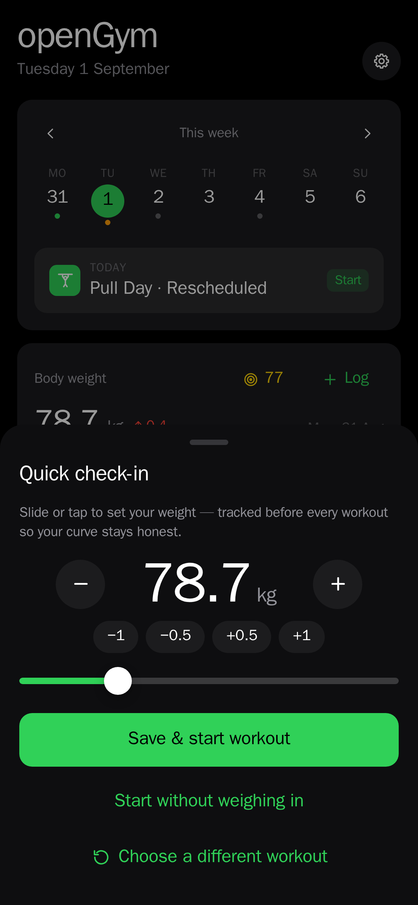
During a workout
The workout screen is built to be read at arm's length between sets. The header counts elapsed time and sets completed; a progress bar tracks the session; Exercise 1 / 5 tells you where you are.
The animation loops the movement with the worked muscles shaded red — tap to pause it, or Minimize to collapse it and bring the set grid up. Under the name sit the exercise's tags and your best-ever load.
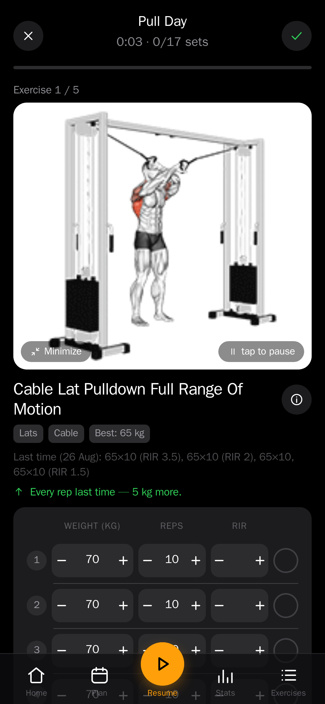
Logging a set
Each row is one set: weight, reps, and optionally effort, with a circle on the right to mark it done. Steppers change values without a keyboard. The line above the grid quotes exactly what you did last time, including the effort you recorded, so you are never guessing.
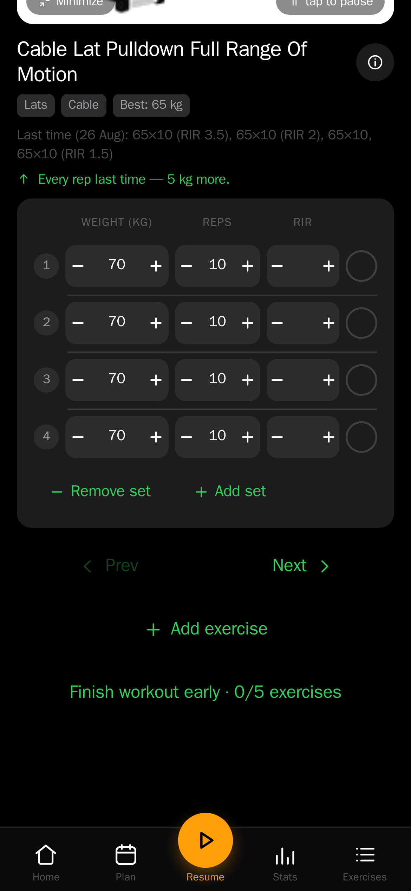
Effort, in your own scale
An optional third column records how hard a set was, as either RIR (reps left in the tank) or RPE (the same judgement on a 10-point scale). Off by default; switch it on in Settings. Each set remembers the scale it was logged with, and the value never affects your progression or 1RM — it exists to be read back in Stats.
Rest timer
Completing a set starts the rest timer at your configured default (90 seconds out of the box). You can extend or skip it. If you background the app, a push notification tells you when rest is over — see Section 12.
Supersets and timed exercises
Supersets are built in the routine editor and run back-to-back, with a rest only after the pair. Timed exercises — planks, hangs, wall sits, loaded carries — are logged in seconds rather than reps, with a work timer separate from the rest timer that records how long you actually held. They can carry weight too.
Bodyweight exercises
Push-ups, pull-ups, dips and roughly 300 others know they carry no load: no weight column, no working-weight prompt, just reps. Add a dip belt and it reads as an addition and progression follows the weight again. Without one, reps climb — and past a ceiling you set, the app adds a set rather than another rep.
Personal records
Beat a previous best and the app flags it as you log it. Finishing the session shows a summary with the muscles you just trained.
The screen is held on for the length of a workout and released the moment you finish, so you are not unlocking your phone between every set. It can be switched off in Settings, and some browsers do not support it — iOS in particular refuses the lock in Low Power Mode.
The exercise library
1,324 exercises, each with a looping animation. Search by name, or filter by body part with the chips along the top. A second row of chips narrows by equipment, and it adapts to what you have already picked — every combination shown has results behind it.
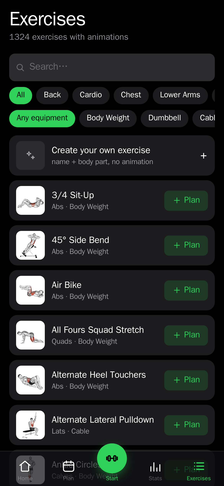
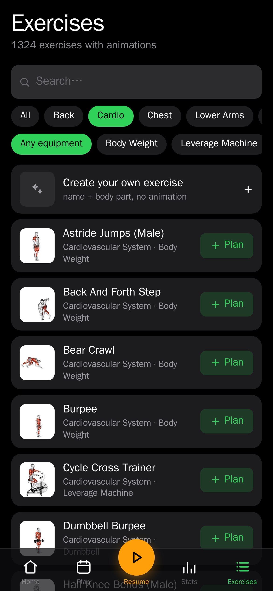
Exercise detail
Tapping an exercise opens its sheet: the animation, the muscles it works, the equipment it needs, Add to my plan, and step-by-step instructions. Instructions are translated in ten languages besides English.
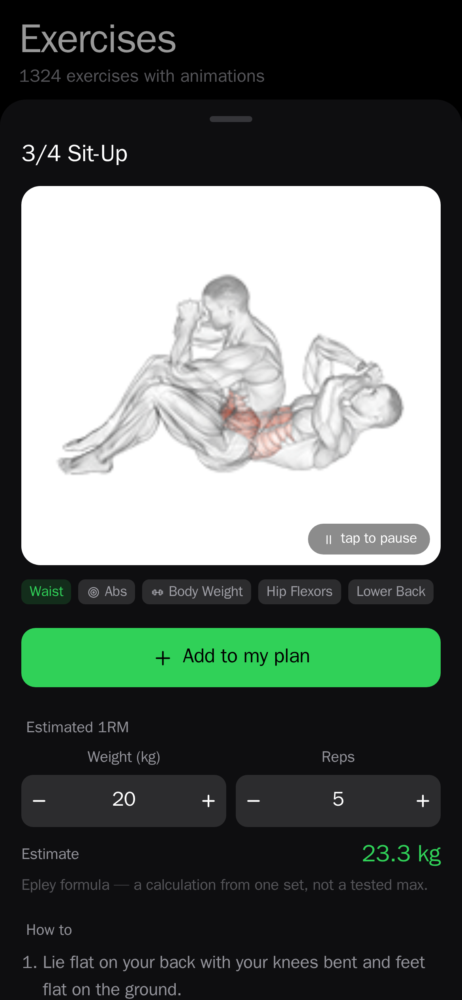
Estimated 1RM
Enter a weight and reps to estimate a one-rep max, or read the app's own estimate from your best eligible set — it names which set it used. It will not guess above 12 reps, where the formula stops being meaningful.
Your own exercises
The first row of the library is Create your own exercise. A name and a body part is enough. Custom exercises behave like built-in ones everywhere, with an optional description in place of an animation.
Stats & progress
Four tiles head the tab: total workouts, workouts this month, your week streak, and body-weight change over 30 days. Below them the analysis proper.
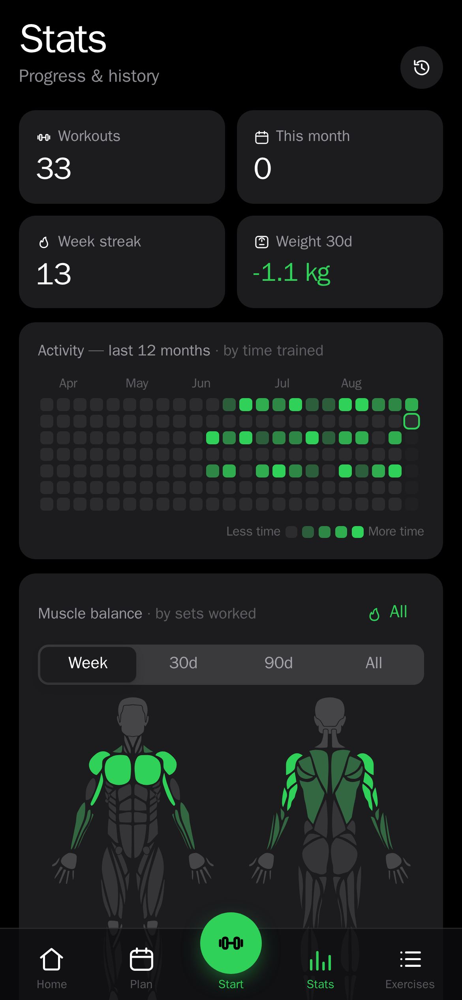
Activity heatmap
A twelve-month grid shaded by time trained, not merely whether you turned up — a long session reads darker than a short one.
Muscle balance
Front and back body diagrams shaded by how many sets each muscle received, over a week, 30 days, 90 days or all time. Underneath, a ranked list of muscles by set count and — more useful — a list of the muscles you have not trained in that period. Choose a male or female figure in Settings.
There is also a hard-sets mode that counts only sets taken near failure, answering "where did the stimulus go" rather than "where did the volume go". A muscle can lead on set count and still never be trained hard.
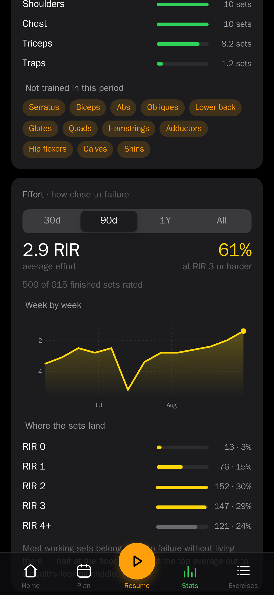
Effort
If you record effort, this card reads it back over 30 days, 90 days, a year or all time. It always shows how many of your sets were actually rated — an average without its denominator would quietly speak for sets you never rated. Where the sets land shows the spread, because half your sets at failure and half in warm-up territory average out to a healthy-looking number that describes neither.
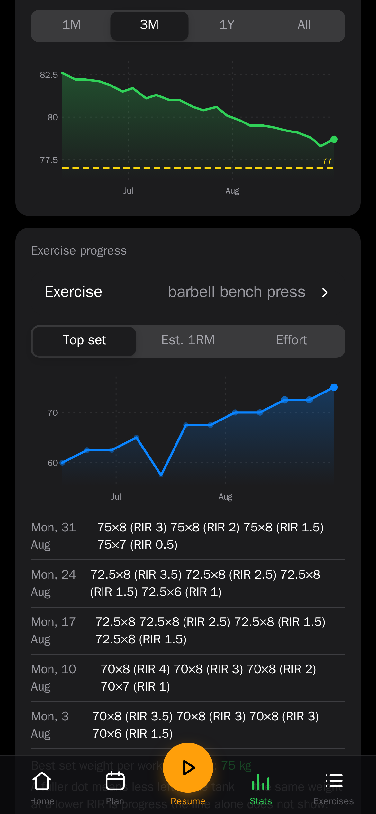
Per-exercise curves
Each exercise gets a top-set chart over time. Where effort was recorded, each session's dot fills in according to how much was left in the tank — so the same weight moved with more in reserve stops reading as a flat line.
History
Reached from the clock icon on the Stats header. Every session you have logged, newest first, with its date, routine, duration and sets. Open one to see the exercises and every set as recorded, and to correct anything logged wrong.
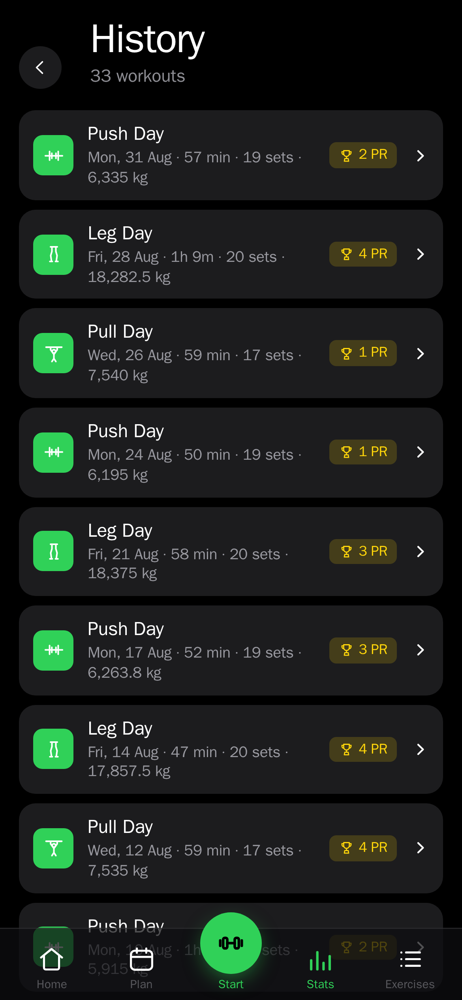
Settings
Reached from the gear icon on Home.
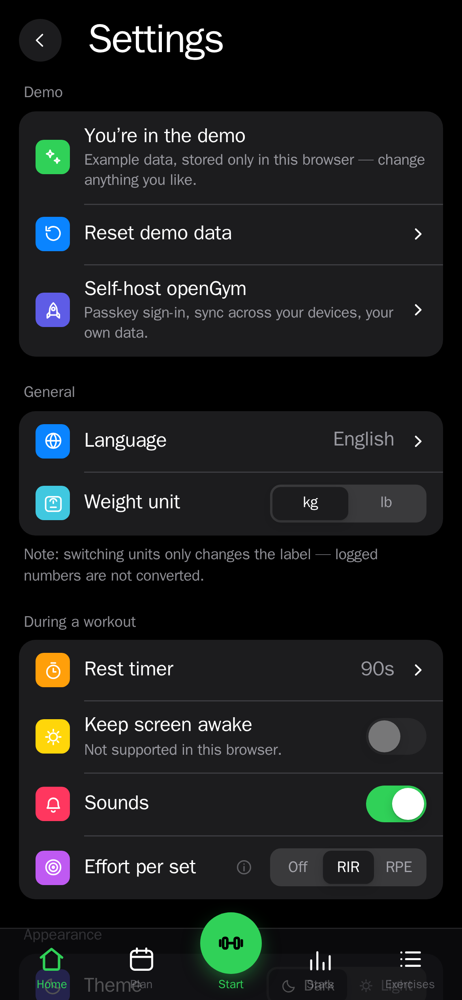
General
Language — twelve languages for the interface, with exercise instructions localised in ten of them. Weight unit — kg or lb.
Switching between kg and lb changes what the column is called. It does not convert numbers you have already logged. Pick your unit before you start recording.
During a workout
Rest timer default length. Keep screen awake during a session. Sounds for timer and set completion. Effort per set — Off, RIR or RPE.
Appearance
Dark or light theme, and eight accent colours, saved to your profile so they follow you across devices. Also the body figure — male or female — used on the muscle map.
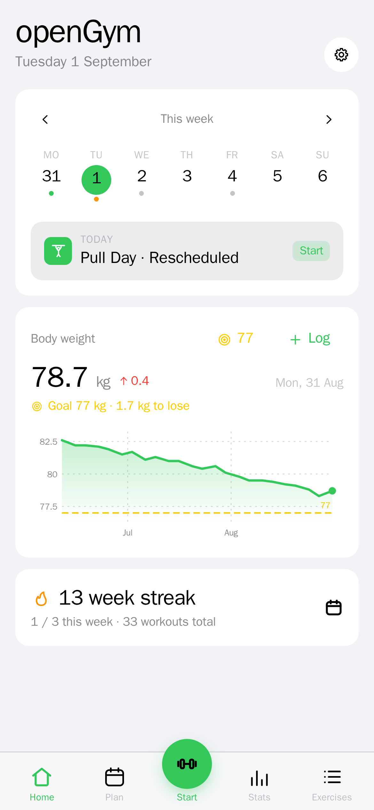
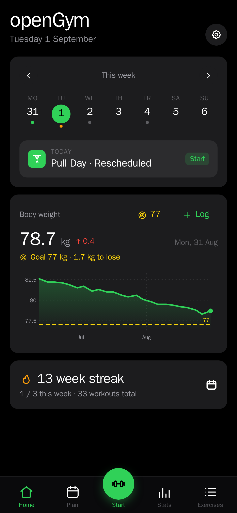
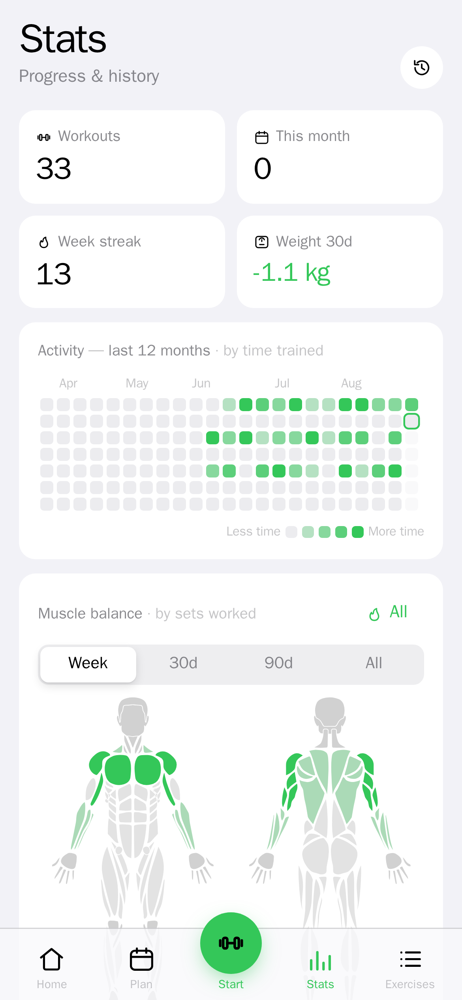
Data
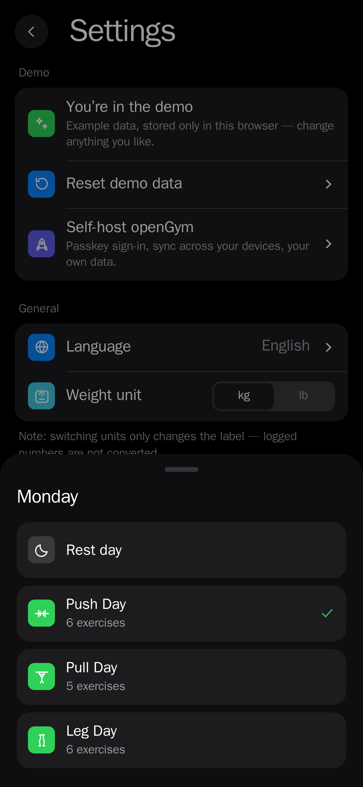
See Section 15.
Notifications
Two kinds, both opt-in per profile, and there is nothing to configure — the server generates its own push keys on first run.
- Rest-timer alerts fire when rest is over, even with the app closed. The client cancels the alert when you finish rest on screen, so it only actually arrives if you backgrounded the app.
- Day reminders arrive at a time you choose, on days you have a workout planned but have not logged one. Rest days are skipped, and it fires by your own clock wherever you are.
Enable them in Settings and accept the browser's permission prompt. Notifications need the same HTTPS origin as passkeys do.
On your phone
Install as an app
Open your instance in the phone's browser and add it to the home screen — Share → Add to Home Screen on iOS, ⋮ → Add to Home screen on Android. It then runs full-screen with no browser chrome, works offline for everything already cached, and syncs when it reconnects.
Passkey sign-in and push notifications both require a real HTTPS hostname, so a phone cannot use them against a LAN IP. See Section 03, and docs/SELF_HOSTING.md for putting a domain in front of the app. Until then a phone can still use guest mode.
Standalone Android app
The whole tracker also builds as a sideloadable APK with no server at all: data stays on the phone, with native workout reminders. This fork publishes no prebuilt binary — build it from docs/MOBILE.md.
Admin dashboard
Optional, and off by default so a fresh instance has no admin at all. To enable it, create your profile first, find your user id, then add it to .env:
ADMIN_UIDS=your-user-id-here
docker compose up -dReload the page and an Admin dashboard row appears in Settings. Admin status is evaluated on every request, so you do not need to sign in again.
The dashboard shows who is training right now (a heartbeat while a workout is on screen), one row per user with workout counts and last activity, and a drill-down into any user's full history and body-weight log. You can disable an account — which signs it out everywhere and locks it — and generate or revoke invite codes.
nginx resolves the API's address once at startup and caches it. Recreating just the api container leaves nginx pointing at an address that no longer exists, and every request returns 502 Bad Gateway. Run docker compose restart web afterwards.
Invite-only signup
With INVITE_ONLY=1, creating a profile requires a code an admin generates. Codes are single-use and can be revoked until used. Strongly recommended for any instance reachable from the internet — otherwise anyone who finds the URL can create an account.
Backup & your data
Two independent routes, and they serve different purposes.
Per-profile export
Settings → export writes a single JSON file with your routines, workouts and weigh-ins. Import reads it back on any instance. This is the portable copy — it is what you take with you.
Whole-instance backup
Back up the ./data folder. It holds every account, passkey credential, per-user state, and the session signing key. Restoring it restores the instance exactly, passkeys included.
Importing from other trackers
openGym reads exports from FitNotes (Android and iOS), Strong and Hevy, and body weight straight out of an Apple Health export. Exercise names are matched against the library; anything unrecognised becomes one of your own custom exercises, so nothing in the file is silently dropped.
Passkeys are bound to RP_ID. Changing it invalidates every existing passkey — accounts and history survive, but everyone re-registers their sign-in. Decide on your hostname before people register.
Troubleshooting
| Symptom | Cause & fix |
|---|---|
| "Passkeys not supported in this browser" | Not a secure origin. Passkeys need HTTPS, or localhost on the machine itself. A LAN IP can never work — use guest mode, or put a real HTTPS hostname in front. |
| "Verification failed" on sign-in | RP_ID or ORIGIN does not match the address bar exactly, including scheme and port. Correct them and restart. |
| 502 Bad Gateway | nginx cached the old API container address. docker compose restart web. |
| "Port is already allocated" | Another service holds the port. Change WEB_PORT and the port in ORIGIN together. |
| Exercise animations are blank | The media download did not finish. Check docker compose logs media; the folder should hold 1,324 images and 1,324 animations. |
| Weights look wrong after switching units | Switching kg/lb relabels but never converts. Switch back — nothing was altered. |
| Screen sleeps mid-workout | The browser refused the wake lock. iOS declines it in Low Power Mode. |
| Push notifications never arrive | They need the same HTTPS origin as passkeys, plus browser permission. On iOS the app must be installed to the home screen first. |
Logs live in docker compose logs -f. To stop the stack, docker compose down — but note that docker compose down -v deletes the data volume and with it every account and passkey.